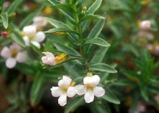

Staphisaigre ou herbe aux poux

Staphisaigre ou herbe aux poux (Delphinium staphysagria de la famille des Renonculacées)
Toxique pour le Korat.
Partie toxique pour les chats en général et le Korat en particulier :
Toute la plante mais surtout les graines.
Symptômes du processus pathologique :
Etat d'excitation avec spasmes et convulsions, une mydriase, de l'incoordination évoluant en paralysie généralisée. Des signes digestifs, cardiaques et pulmonaires peuvent être observés : diarrhées, vomissements, salivation, arythmie, fibrillation ventriculaire, dyspnée / bradypnée. Le sujet meurt asphyxié.
Origine de la toxicité (principe actif) :
Divers alcaloïdes, notamment delphinine, delphinoïne et staphysagroïne.